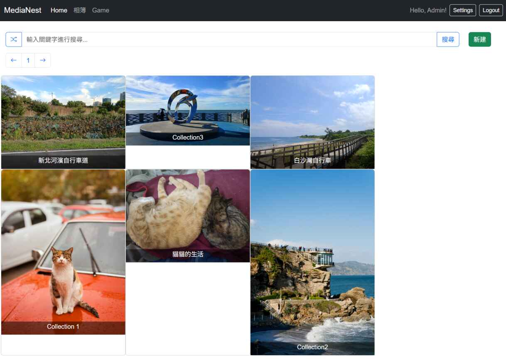

⚡ Projects
Media Nest
A web application designed to run as a mini HomeLab host on a family mini PC. It provides a convenient UI to manage albums, upload and browse images, and handle user access.
🔗 View on GitHub
Data Structures & Algorithms
A collection of classic data structures, algorithms, and geometry solutions implemented in C#.
🔗 View on GitHubImage Mini Lab
Image Mini Lab is a WPF desktop application built with the MVVM pattern. It implements common image processing algorithms from scratch and provides a user-friendly GUI to experiment with them.
🔗 View on GitHubFlowshop Scheduling
Solves the Flowshop Scheduling Problem using heuristic algorithms such as Iterative Improvement (II), Simulated Annealing (SA), and others.
🔗 View on GitHubMirco-Compiler
This project is a Micro Compiler implemented in C using Lex and Yacc (Flex/Bison). It compiles a simplified language called Micro/Ex, supporting variable declarations, assignments, for-loops, nested loops, and if-then-else statements, with undeclared variable detection.
🔗 View on GitHubRetree
Retree is an editor for tree reconstruction and visualization. It can automatically or manually trim redundant branches and leaves, customize leaf models and trunk textures, and build meshes with a flexible constructor. By taking a point cloud as input and leveraging the powerful AdTree reconstruction algorithm, generates accurate tree skeletons for further editing and rendering.🔗 View on GitHub
Leetcode
This repository stores my C# implementations of LeetCode problems. It serves as a personal record of practice in algorithms and data structures.
🔗 View on GitHub